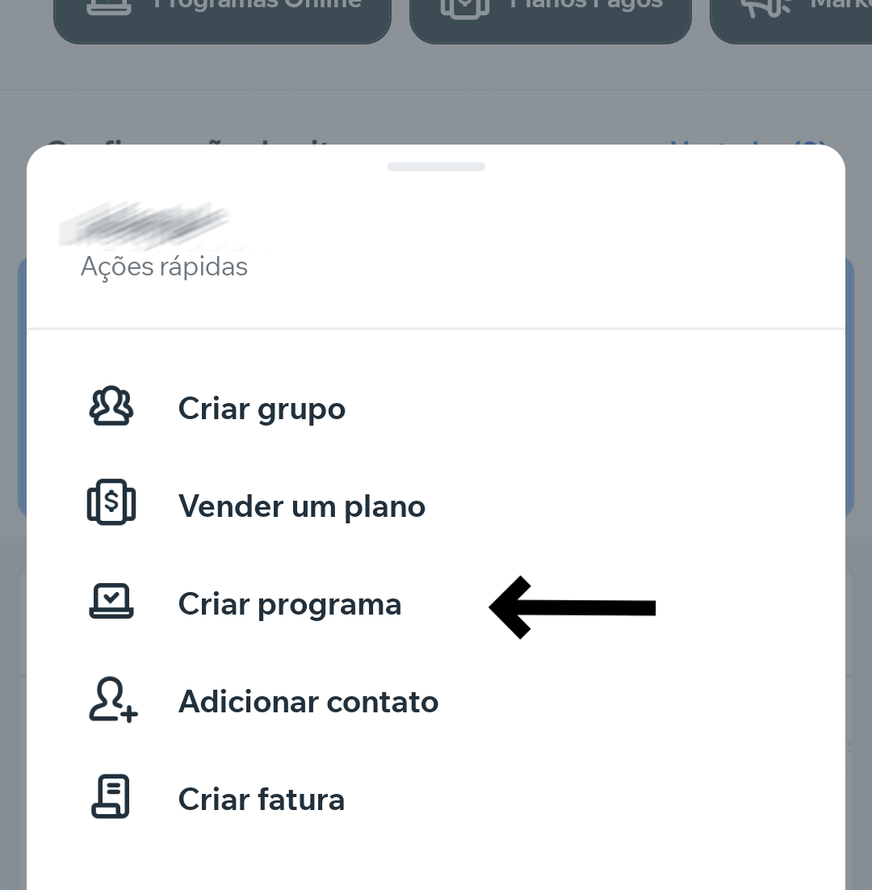
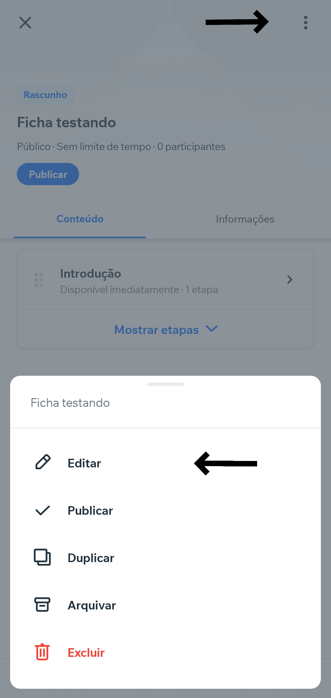

-
1-
Abra o aplicativo e clique no botão Adicionar , que está localizado no centro inferior.
-
2-
Selecione a opção Criar programa e escolha criar um Template em branco.

-
3-
Siga as etapas preenchendo as informções necessárias.
-
4-
Após definir o nome, o tipo de progresso e o tempo, você tera uma ficha em branco para construir.
-
5-
Comece colocando uma imagem, clique nos 3 pontinhos no canto superior direito e vá em Editar.

-
6-.
Clique em Adicionar imagem de capa ou vídeo e escolha a mídia de sua preferência.
-
7-
Adicione uma descrição com as informações que achar necessárias para o aluno.
-
8-
Desça a tela para configurar Ordem das etapas e marque a opção de Ordem fixa, esta opção não vai deixar o aluno pular etapas.
-
9-
Desça a tela para configurar Ordem das etapas e marque a opção de Ordem fixa, esta opção não vai deixar o aluno pular etapas.
-
10-
Desça a tela para configurar Ordem das etapas e marque a opção de Ordem fixa, esta opção não vai deixar o aluno pular etapas.
-
11-
Desça a tela e vá em Visibilidade e marque a opção Secreto.
-
12-
Desça a tela e vá em Número de participantes e marque a opção Limitado e defina para quantas pessoas deseja destinar a ficha.
Pronto, agora as configurações básicas estão prontas.